1 – Olá, Mundo! Crie um programa que exiba: Olá, Mundo! Bem-vindo à programação em C.
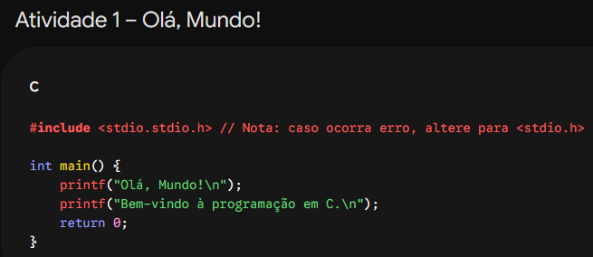
Atividade 2 – Apresentação Solicite o nome e a idade do usuário e exiba uma mensagem de apresentação.
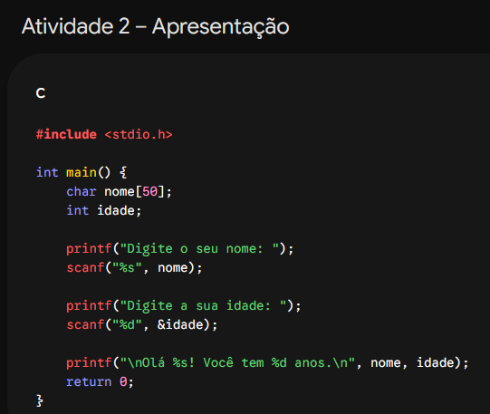
Atividade 3 – Soma Leia dois números inteiros e exiba a soma.
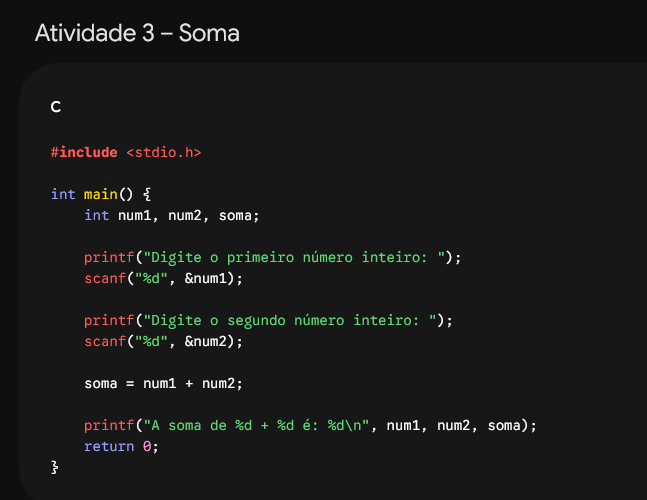
Atividade 4 – Quatro operações Leia dois números e mostre soma, subtração, multiplicação e divisão inteira.
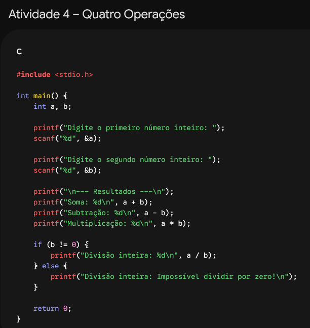
Atividade 5 – Antecessor e sucessor Leia um número inteiro e mostre seu antecessor e sucessor.
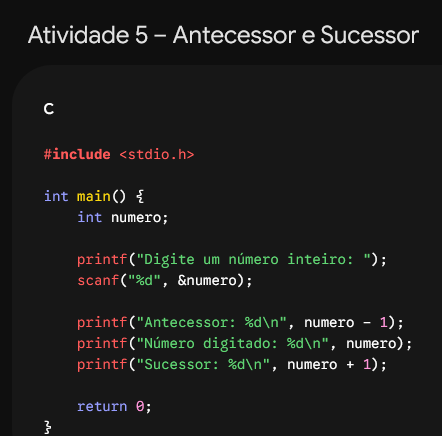
Atividade 6 – Média Leia duas notas (float) e calcule a média.
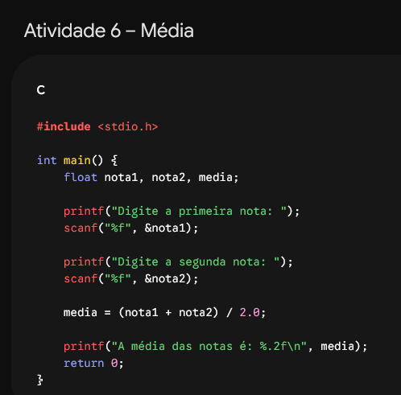
Atividade 7 – Celsius para Fahrenheit eia uma temperatura em Celsius e converta usando F=(C*9/5)+32.
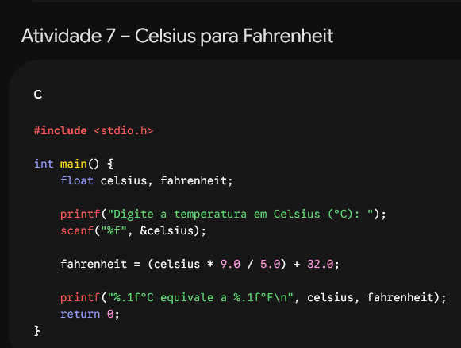
Atividade 8 – Área do retângulo Leia base e altura e calcule a área.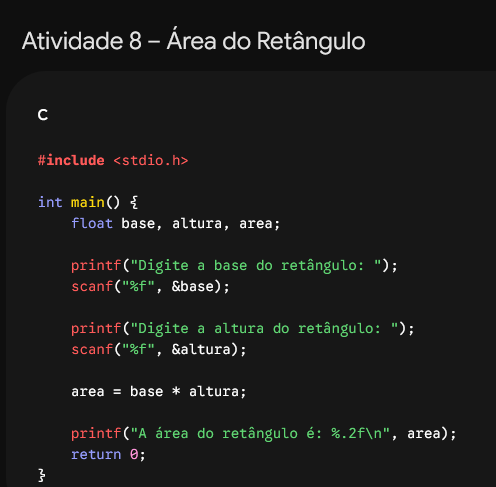
Atividade 9 – Salário Leia valor da hora e quantidade de horas trabalhadas. Calcule o salário.
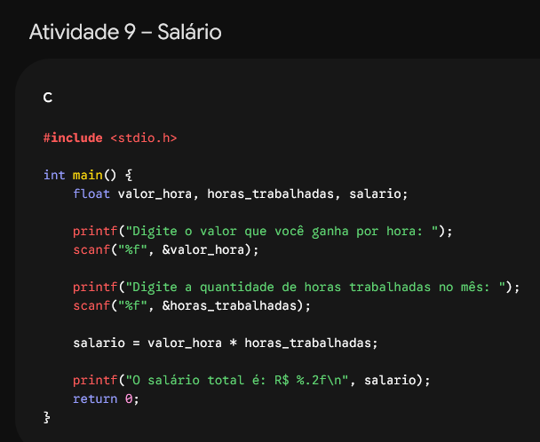
Atividade 10 – Calculadora Leia dois números e mostre soma, subtração, multiplicação, divisão e resto da divisão.
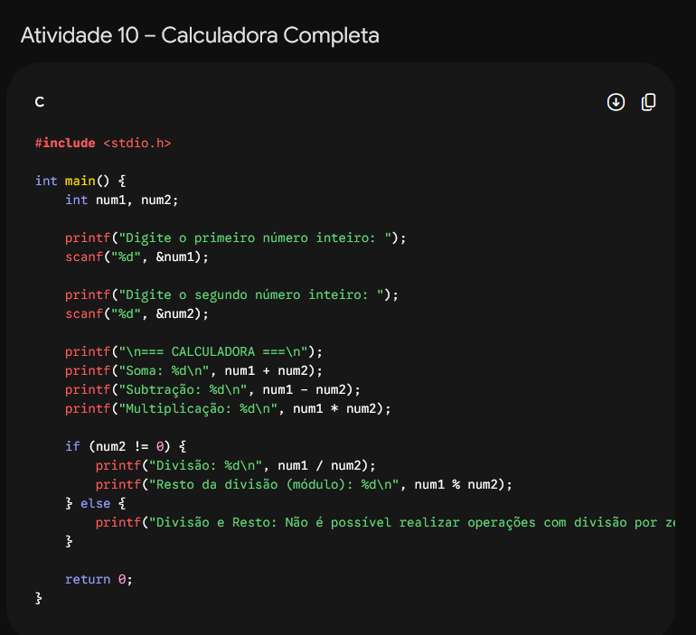
Extra Solicite nome, idade, nota 1 e nota 2. Exiba uma ficha do aluno contendo os dados e a média final.
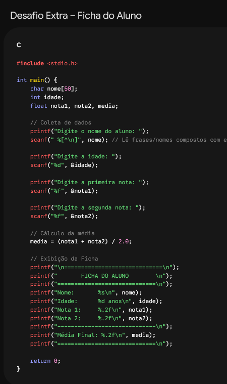